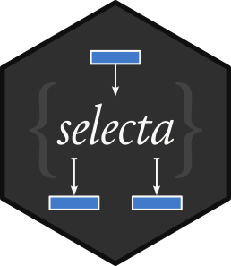
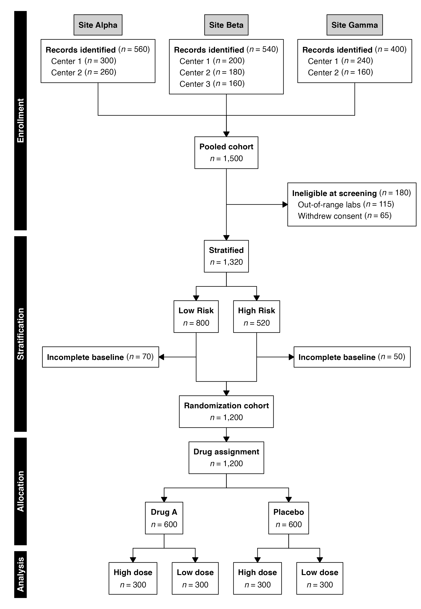
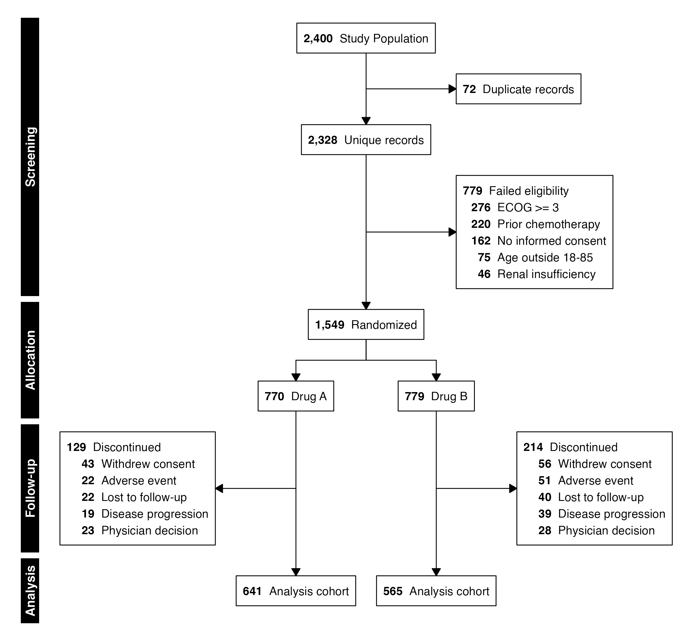

selecta 
selecta | /seˈlɛk.ta/ | Latin, n. pl. of selectum, past participle of seligere: things chosen out
Declarative EQUATOR-style diagrams for clinical studies.
Overview
The selecta package provides a pipe-friendly, declarative interface for constructing EQUATOR-style flow diagrams. A diagram is specified as a sequence of operations—enrollment, exclusion, stratification, recombination, and endpoint—that mirrors the natural language description of a study’s participant flow. The package supports multiple reporting guidelines (CONSORT, STROBE, STARD, PRISMA, MOOSE), hybrid or custom topologies, automatic count computation, arithmetic checking, diagram render via grid graphics or Graphviz DOT, and optionally return of the analysis-ready cohort at any stage of the selection process.
For a more comprehensive description of this package and its features, see the full documentation and vignettes.

Installation
The stable release of this package can be installed from CRAN.
install.packages("selecta")Alternatively, install it directly from GitHub (stable) or Codeberg (development):
# Stable release
devtools::install_github("phmcc/selecta")
# Development version
devtools::install_git("https://codeberg.org/phmcc/selecta.git")Package Composition
Design Principles
The architecture of selecta reflects four guiding principles:
Declarative specification. Diagrams are defined as a linear sequence of named operations. The code reads top-to-bottom, matching the visual top-to-bottom flow of an EQUATOR diagram and the narrative order in which investigators describe their enrollment process.
Dual-mode operation. The same API supports both data mode (counts computed automatically from a data frame) and manual mode (counts supplied directly as integers). This permits use at any stage of a project—from protocol drafting through final manuscript preparation.
Diagram–data duality. A
selectaobject is simultaneously a diagram specification and a data pipeline.flowchart()renders the visual output;cohort()extracts the resulting dataset. The same object serves both reporting and analysis.Minimal dependencies. The package requires only
data.tablefor data manipulation andgrid(part of base R) for rendering. No external graphics libraries, web frameworks, or layout engines are imposed.
These principles manifest in the standard calling convention:
Supported Guidelines
selecta provides dedicated functions for each guideline’s specific structural requirements, all composable within the same pipe-oriented framework:
| Guideline | Study type | Key functions |
|---|---|---|
| CONSORT | Randomized trials |
enroll(), allocate()
|
| STROBE | Observational cohorts |
enroll(), stratify()
|
| STARD | Diagnostic accuracy |
assess(), stratify(), endpoint()
|
| PRISMA | Systematic reviews |
sources(), combine()
|
| MOOSE | Meta-analyses of observational studies |
sources(), combine(), stratify()
|
Functional Reference
Diagram construction
Functions for building the enrollment flow. Each returns a modified selecta object and is designed for use in a pipe chain.
| Function | Purpose | Guideline |
|---|---|---|
enroll() |
Initialize a flow from data (data, id) or counts (n) |
CONSORT, STROBE, STARD, split-and-recombine |
sources() |
Initialize a multi-source flow with parallel columns | PRISMA, MOOSE |
exclude() |
Remove participants matching a criterion, with optional sub-reasons | All |
allocate() |
Split into randomized arms (alias for stratify()) |
CONSORT |
stratify() |
Split into parallel strata by any characteristic | STROBE, STARD, MOOSE |
assess() |
Record a test/procedure receipt step | STARD |
combine() |
Merge parallel streams into a single flow | PRISMA, MOOSE, split-and-recombine |
endpoint() |
Designate the terminal node(s) | All |
phase() |
Label a study phase (vertical text in left margin) | All |
Rendering and export
| Function | Purpose |
|---|---|
flowchart() |
Render the diagram (grid graphics or Graphviz DOT) |
plot() |
S3 alias for flowchart()
|
flowsave() |
Save to file (PDF, PNG, SVG, TIFF) with auto-computed dimensions |
recdims() |
Compute recommended figure dimensions from diagram content |
Operating Modes
selecta supports two modes, selected automatically by the arguments passed to enroll():
| Workflow | Data mode | Manual mode |
|---|---|---|
| Initialization | enroll(data, id = "patient_id") |
enroll(n = 1200) |
| Exclusions | exclude("Label", criterion = <condition>) |
exclude("Label", n = 50) |
| Arms | allocate("treatment_column") |
allocate(labels = c("A", "B"), n = c(300, 300)) |
| Sub-reasons | Tabulated from one or two columns (reasons) |
Named vector, or named list for nested reasons (reasons) |
| Cohort extraction | Available via cohort()
|
Not applicable |
Flow Topologies
selecta supports three distinct flow topologies, distinguished by what happens after a split:
| Topology | Split | Merge | Use case |
|---|---|---|---|
| Permanent arms |
allocate() / stratify()
|
None | CONSORT, STROBE |
| Source convergence | sources() |
combine() |
PRISMA, MOOSE |
| Split-and-recombine | stratify() |
combine() |
Screening validation, exposure classification |
| Factorial (nested split) |
allocate() / stratify(), twice |
Optional combine()
|
Factorial trials, cross-classified cohorts |
Visual Customization
All rendering functions accept the following styling parameters:
| Parameter | Purpose | Default |
|---|---|---|
cex, cex_side, cex_phase
|
Font size multipliers (main, side, phase) | 0.85, same as cex, 0.9 |
box_fill |
Fill color for main flow boxes | "white" |
side_fill |
Fill color for side (exclusion) boxes | "white" |
border_col |
Border color for all boxes | "black" |
arrow_col |
Color for connector arrows | "black" |
phase_fill |
Fill color for vertical phase strips | "black" |
phase_text_col |
Text color for phase labels | "white" |
font_family |
Font family for all text | "Helvetica" |
count_first |
Bold count before label in all boxes | FALSE |
number_format |
Locale-aware count formatting |
"us" (or global option) |
vpad, margin
|
Vertical spacing and outer margin (inches) | 0.25, 0.25 |
Regional number formatting
The number_format argument accepts named presets ("us", "eu", "space", "none") or a custom c(big.mark, decimal.mark) vector. The choice may be set globally for a session:
Diagnostic output
For inspecting flow diagram layout specifics, selecta can emit a structured trace of its internal computation. The trace is controlled by a single session option:
options(selecta.debug_layout = TRUE)Comparison with Related Packages
The R ecosystem includes several packages for generating CONSORT diagrams. The following comparison identifies areas of overlap and distinction:
| Capability | selecta | consort | ggconsort | PRISMAstatement |
|---|---|---|---|---|
| Pipe-friendly declarative API | ✓ | — | ✓ | — |
| Data-driven automatic counting | ✓ | ✓ | ✓ | — |
| Manual count entry | ✓ | ✓ | — | ✓ |
| Multi-guideline support (CONSORT, STROBE, STARD, PRISMA) | ✓ | — | — | ◐ |
| Multi-source entry (PRISMA) | ✓ | — | — | ✓ |
| Split-and-recombine topology | ✓ | — | — | — |
| Cohort extraction for analysis | ✓ | — | — | — |
| Phase labels (CONSORT standard) | ✓ | ✓ | — | — |
| Exclusion sub-reasons | ✓ | ✓ | — | — |
| Factorial (nested-split) designs | ✓ | ◐ | — | — |
| Hierarchical (nested) sub-reasons | ✓ | — | — | — |
| Multi-format export | ✓ | ◐ | ◐ | — |
| Graphviz/HTML output | ✓ | ✓ | — | ✓ |
✓ Full support | ◐ Partial support | — Not available
A detailed feature comparison is available in the package documentation.
Illustrative Example
The selectaex* datasets included with this package provide simulated clinical trial selection cohorts with various inclusion/exclusion criteria, as well as different arm allocation criteria. The following example demonstrates how selecta functions can be used to generate a CONSORT diagram from the two-armed dataset selectaex2, using data-driven counts, count-first formatting, and automatic subcohort extraction.
Step 1: Flowchart Creation
Use a pipe-based workflow to sequentially string together the various elements of the flowchart, from top to bottom. The exclude() function pares down the dataset based on the condition supplied to the criterion parameter, whereas allocate()/stratify() sets arms. Export the output using the flowsave() function.
flow <- enroll(selectaex2, id = "patient_id") |>
phase("Screening") |>
exclude("Duplicate records", criterion = is_duplicate == TRUE,
included_label = "Unique records") |>
exclude("Failed eligibility", criterion = eligible == FALSE,
reasons = "exclusion_reason",
included_label = "Eligible cohort") |>
phase("Allocation") |>
allocate("treatment") |>
phase("Follow-up") |>
exclude("Discontinued", criterion = discontinued == TRUE,
reasons = "discontinuation_reason") |>
phase("Analysis") |>
endpoint("Analysis cohort")
flowsave(flow, "consort.pdf", count_first = TRUE)

Step 2: Cohort Extraction
The diagram is not merely a figure—selecta maintains the dataset state at every step, allowing direct extraction of the analysis-ready cohort:
# The final cohort
final <- cohort(flow)
# Split by arm
by_arm <- cohort(flow, split = TRUE)
# A single arm
drug_a <- cohort(flow, arm = "Drug A")Moreover, every intermediate stage is accessible via cohorts(), enabling inspection of participants removed at each step:
stages <- cohorts(flow)
# Participants excluded for failing eligibility
stages[["Failed eligibility"]]$excluded
# Dataset remaining after the eligibility exclusion
stages[["Failed eligibility"]]$includedDevelopment
Repository
- Primary development: codeberg.org/phmcc/selecta
- GitHub releases: github.com/phmcc/selecta
Acknowledgments
The design of selecta draws inspiration from several existing packages and reference standards:
- EQUATOR Network — Reporting-guideline standards (CONSORT, STROBE, STARD, PRISMA, MOOSE)
- consort (Alim Dayim) — CONSORT diagram conventions in R
- stard (Chiara Herzog) — STARD diagram conventions in R
- DiagrammeR (Iannone) — R Graphviz/DOT rendering
- data.table (Dowle & Srinivasan) — High-performance data operations
Citation
citation("selecta")
To cite selecta in publications, use:
McClelland PH (2026). _selecta: EQUATOR-Style Enrollment Diagrams
for Clinical Studies_. R package version 0.6.0,
<https://phmcc.codeberg.page/selecta/>.
A BibTeX entry for LaTeX users is
@Manual{,
title = {selecta: EQUATOR-Style Enrollment Diagrams for Clinical Studies},
author = {Paul Hsin-ti McClelland},
year = {2026},
note = {R package version 0.6.0},
url = {https://phmcc.codeberg.page/selecta/},
}Further Resources
-
Function documentation:
?function_nameor the reference index -
Companion package:
summatafor publication-ready summary tables - Issue tracker: Codeberg Issues, GitHub Issues
The selecta package is under active development. Any breaking changes to the API will be reported in the changelog.